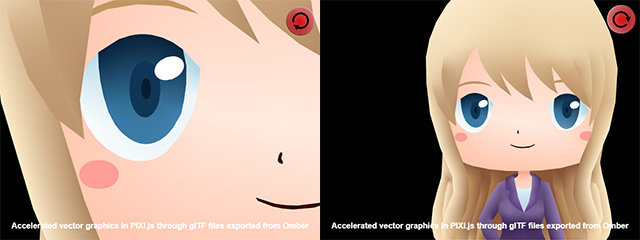

original page
glTF 2.0 Vector Graphics Plugin for Pixi.js
上記ライブラリを自分なりに解釈する為に翻訳してメモ。
（訳が間違っている可能性もあるので、その場合は原文を当たるなりして下さい）

pixi-omber-gltf2-vectorは、Pixi.js（JavaScriptグラフィックエンジン）で高速化された
ベクターグラフィック用のプラグインです。
ベクターグラフィックは、透明度を含む高解像度アートのビットマップより小さいファイルサイズを提供する為、
HTML5ゲームに特に役立ちます。
プラグインを使用すると、glTF
2.0形式で3Dメッシュとしてエンコードされたベクターアートをロードし、
通常のPixi.jsスプライトのようにゲームでアートを使用出来ます。
プラグインは、描画プログラムOmberで作成されたベクターアートで動作するように特別に設計されていますが、
OmberはSVGファイルをロードし、glTF形式で保存する為のサポートを幾つか持っています。
サンプルディレクトリには、プラグインを使用してベクターアートを表示する簡単な例が含まれていますが、
プラグインの使用に必要な手順の詳細については、以下で説明します。
プラグインは、3Dグラフィックハードウェアですばやくレンダリング出来る
3Dメッシュに変換されたベクターアートをロードします。
Omber vector dawingプログラムを使用してベクターアートを作成し、
これらの推奨設定（日本語版）を使用してアートをglTF形式にエクスポートします。
プラグインは現在、データが.GLBファイルとしてエクスポートされ、
浮動小数点カラーを使用しない事を想定しています。
スケールには1メートルあたり1ピクセルを使用し、
「不透明メッシュのみをマージ」設定を使用してメッシュを出力する事をお勧めします。
エクスポートするときは、x = 0、y = 0の原点を基準とした図面の位置に注意して下さい。
Pixiでベクターアートを表示する場合、アートはこの原点（0, 0）を中心に配置される為、
エクスポートする前に図面を移動して、原点が適切な位置になるようにする必要があります。
HTMLファイルにPixi.jsライブラリとpixi-omber-gltf2-vectorプラグインコードを含めます。
Pixiライブラリをインクルードした後に、プラグインを必ずインクルードして下さい。
プラグインのビルド済みバージョンは、ビルド（build）ディレクトリにあります。
<script src="https://cdnjs.cloudflare.com/ajax/libs/pixi.js/4.7.3/pixi.min.js"></script>
<script src="build/pixi-omber-gltf2-vector.js"></script>
Pixi-omber-gltf2-vector APIは、PIXI.omber名前空間からアクセス出来ます。
Pixiを初期化した後、標準のPixiローダーを使用して、
以前にエクスポートしたglTF2.0.glbファイルをロード出来ます。
PIXI.loader
.add('vector.glb')
.load(start);
Pixi-omber-gltf2-vector APIは、PIXI.omber名前空間からアクセス出来ます。
プラグインは、ビットマップスプライトに使用されるTextureオブジェクトの代わりに
Gltfオブジェクトとして.glbファイルをロードします。
それらを表示するには、通常のPIXI.Spriteオブジェクトの代わりにPIXI.omber.VectorMeshオブジェクトを作成します。
通常のビットマップスプライトにPIXI.Spriteを引き続き使用します。
function start(loader, resources) {
let mesh = new PIXI.omber.VectorMesh(resources['vector.glb'].gltf);
app.stage.addChild(mesh);
}
現在、通常のPixi変換はVectorMeshでサポートされています。
たとえば、メッシュにx、y、回転、スケールの値を割り当てて、画面上で移動出来ます。
ベクトルオブジェクトのタッチとクリックを検出する為の基本的な長方形のヒットボックスもサポートされています。
通常のビットマップスプライトにPIXI.Spriteを引き続き使用します。
function start(loader, resources) {
let mesh = new PIXI.omber.VectorMesh(resources['vector.glb'].gltf);
app.stage.addChild(mesh);
}
サンプルディレクトリには、プラグインを使用してベクターアートを表示する簡単な例が含まれていますが、
プラグインの使用に必要な手順の詳細については、以下で説明します。
PIXIプラグインの使用方法を示すさまざまなサンプルが提供されています。